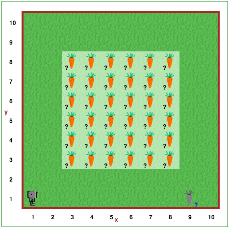

Jūs daug sužinojote apie Robotuko programavimą. Sveikiname! Galbūt nesuvokiate, kad daug sužinojote apie programavimą bet kuria kalba. Daugumą programų sudaro veiksmų seka (vadinama algoritmu), perpinta sąlyginiais sprendimais ir pasikartojančių instrukcijų grupėmis.
Įgyvendinant iki šiol atliktų užduočių sprendimus, reikėjo apgalvoti kiekvieną žingsnį. Supratote užduotį ir norimą gauti rezultatą, tačiau kartais neaišku, kaip tai padaryti. Kai sprendžiate nepaprastą problemą, dažnai geriausia pradėti nuo pieštuko ir popieriaus.
Kai sugalvojate uždavinio sprendimą, užrašykite žingsnius savais žodžiais ant popieriaus. Tai kartais vadinama pseudokodu, nes iš tikrųjų tai nėra instrukcijos, kurias galėtų naudoti Robotukas (arba bet kuri kita programavimo kalba). Kai turite psudokodą, tuomet galite užrašyti jį tikromis instrukcijomis, kurias supras Robotukas.
Prieš pradėdami programuoti būtinai apgalvokite uždavinį. Pirmiausia kelis kartus paspauskite pasaulio atkūrimo mygtuką, kad įsitikintumėte, jog suprantate, kaip atrodo galimi pasauliai. Tuomet išsiaiškinkite, koks algoritmas, arba reikiamų veiksmų seka, yra reikalinga. Tada mintyse pergalvokite programos, kurią ketinate rašyti, vykdymą. Jei ji atliks tai, ko tikitės, tik tada ir tik tada pradėkite programuoti.
Atidarykite Robotuko aplinkos 16 lygį.
Robotuką pasamdė nuskinti morkas keliuose daržuose. Nors visi daržuose yra vienodo dydžio, kiekviename iš jų morkos auga skirtingose vietose. Reikia sukurti programą, kuri leistų Robotukui nuskinti visas morkas kiekviename iš galimų daržų. Žinoma, kad kiekvienoje vietoje visada bus tik 1 arba 0 morkų.
Lygis 15: Lis lietus! Turinys Lygis 17: Įveikti labirintąDėmesio
Atsiminkite, kad
repeatsakinius galime naudoti vienas kito viduje. Ko gero - tai bus naudinga sprendžiant šį uždavinį.